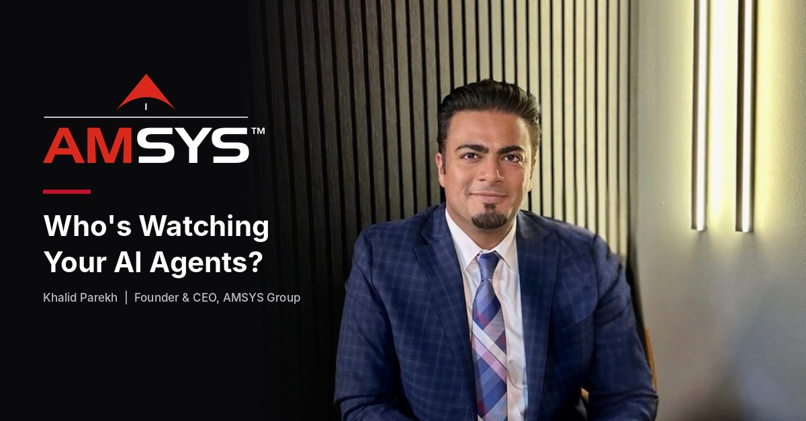

Ask most CEOs how many AI agents are running inside their company and you'll get a guess. Ask their IT team and you'll get a different number. That gap is the problem.
AI agent governance is the set of rules that decide what an AI agent can see, what it can do, and who answers for it when something goes wrong. It's quickly becoming a board-level issue. Gartner predicts that by 2027, 40% of enterprises will demote or decommission autonomous AI agents because of governance gaps they discovered only after a production incident.
I sit on NVIDIA's Global Enterprise AI Partner Advisory Board, and I've spent more than two decades building technology businesses. Here's what I tell executives: the companies that win with agents won't be the ones that adopt fastest. They'll be the ones that can trust what their agents do.
What changed: AI agents in the enterprise don't just answer — they act
A chatbot gives you an answer. An agent takes an action. It sends the email, updates the record, changes the setting, moves the file.
That shift changes the risk math. A wrong answer is embarrassing. A wrong action can cost money, leak data, or break a system — at machine speed.
This month, Microsoft rolled out controls that give each agent its own permissions, scoped to a single task and only for as long as that task runs. It also made generally available a containment layer that limits what local AI agents can touch on Windows devices. When the world's largest software company builds guardrails like that into the operating system, the message is clear: agents are now treated as a new kind of insider.
So what: if an agent can act inside your business, it deserves the scrutiny you'd give a new hire with admin rights. Probably more.
The real agentic AI risk: treating governance as on or off
Gartner names the root cause plainly. Companies treat agent governance as binary: agents are either locked down or fully trusted.
Both fail. Lock everything down and teams route around IT, building shadow tools nobody monitors. Trust everything and an autonomous agent with broad access becomes your biggest attack surface.
The fix is proportional governance — matching controls to how much autonomy an agent actually has.
So what: one policy for every agent is the same as no policy.
A simple AI governance framework: four levels of autonomy
Gartner sorts agents into four autonomy levels. It's the clearest way I've found to explain this to a board. Here's the plain-English version and what each level should require.
- Observe. The agent reads data and shows results only to the person who asked — think document summaries or knowledge search. Controls: scoped data access, user login, usage logs, basic testing. Keep it light.
- Advise. The agent drafts or recommends; a human does the actual work. Think email drafts and reports. Controls: everything above, plus accuracy testing and training people not to rubber-stamp output. The hidden risk here is automation bias.
- Act with approval. The agent can write data, send messages, or change settings — but only after a human says yes, every time. Controls: audit trails, clear approval workflows, and an incident plan built for agents. Watch for approval fatigue. Someone clicking "approve" 200 times a day isn't a control.
- Act autonomously. The agent works on its own inside guardrails; humans review exceptions and logs. Controls: continuous monitoring, enforced guardrails, fast rollback, circuit breakers that halt the agent when it crosses a threshold, and a named owner.
Key takeaway: the more an agent can do, the more you need to see it, stop it, and undo it.
AI agent security starts with an inventory
You can't govern what you can't see. Microsoft's guidance this month makes the same point: an inventory is the starting point, not the finish line.
Bring these five questions to your next leadership meeting:
- How many agents do we run, and who owns each one?
- What systems can each agent read? Which can it write to?
- Which agents can act without a human approving?
- If one misbehaves at 2 a.m., who gets the alert — and can they shut it off?
- Are agent actions logged in a way our auditors would accept?
If your team can't answer these within a week, that's your first project.
So what: an inventory turns AI agents from a hidden risk into a managed asset.
Least privilege for AI: the old rule that matters most
Cybersecurity's oldest principle is least privilege: give every user the minimum access needed for the job. It matters even more for agents.
Agents don't get tired, don't hesitate, and don't question strange instructions. Feed an over-permissioned agent a malicious instruction hidden in an email, document, or web page, and it may simply follow it. That's called prompt injection. It's why agent access should be narrow, time-limited, and tied to a specific task.
Across the industries we serve — healthcare, hospitality, finance, and more — most security problems don't start with exotic attacks. They start with access nobody remembered granting. Agents multiply that problem unless you design against it.
So what: every permission an agent holds is one an attacker could borrow.
What to do in the next 90 days
- Name an owner. One executive accountable for AI agents company-wide.
- Run the inventory. Every agent, every connection, every owner.
- Classify each agent into one of the four levels.
- Match controls to the level — light for Observe, rigorous for Act Autonomously.
- Build the kill switch first. Rollback and circuit breakers before you expand autonomous agents.
- Review every quarter. Agents change as models and tools change.
The bottom line
I've built my career on a simple belief: technology should create trust, not anxiety. AI agents will take on more work in more businesses every quarter.
The leaders who govern them now will scale with confidence. The rest risk becoming part of Gartner's 40% — shutting agents down after the damage is done.
Not sure how many AI agents are running in your business — or what they can touch? AMSYS helps leadership teams inventory, classify, and secure their AI agents before an incident forces the question. Talk to our team about an AI readiness assessment.
Sources: Gartner, May 26, 2026 · Microsoft Security, Nov 5, 2026